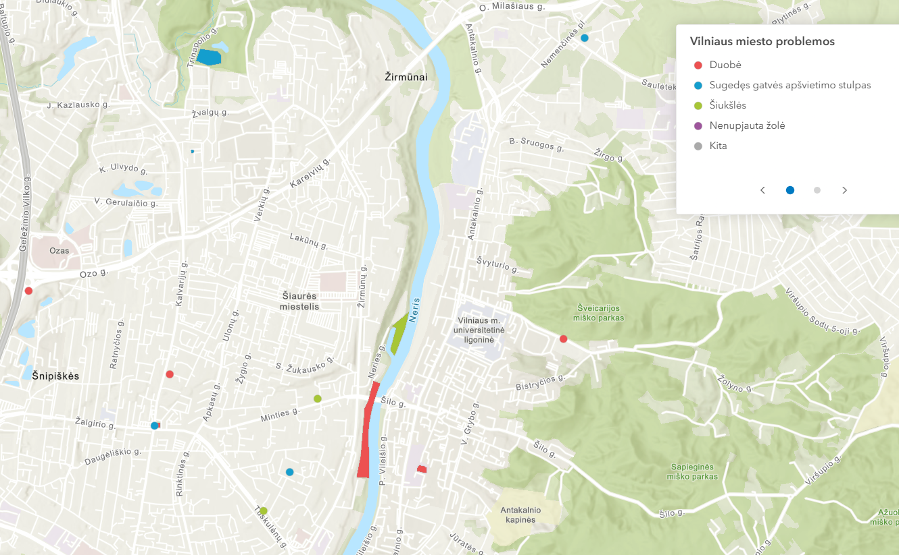

Viešojo transporto stotelių ir gyventojų skaičiaus 3D žemėlapis
Vilniaus miesto seniūnijų 3D žemėlapis, kuriame seniūnijų aukštis vaizduoja gyventojų skaičių konkrečioje teritorijoje. Žemėlapyje taip pat pateikiamas viešojo transporto stotelių pasiskirstymas.
Atidaryti žemėlapį →
Geriamojo vandens stotelės
Interaktyvus Vilniaus miesto geriamojo vandens stotelių žemėlapis. Žemėlapis leidžia įvertinti stotelių pasiskirstymą miesto teritorijoje ir jų prieinamumą skirtingose vietose.
Atidaryti žemėlapį →
Eismo įvykių dinamika
Laiko animacija paremto žemėlapio pagalba vaizduojama eismo įvykių dinamika Vilniaus mieste. Žemėlapis padeda stebėti, kaip eismo įvykiai pasiskirsto erdvėje ir laike.
Atidaryti žemėlapį →
Vilniaus mokyklos
Teminis Vilniaus miesto mokyklų žemėlapis, kuriame pateikiamas ugdymo įstaigų išsidėstymas miesto teritorijoje. Žemėlapis padeda analizuoti švietimo įstaigų pasiekiamumą ir erdvinį pasiskirstymą.
Atidaryti žemėlapį →
Eismo įvykiai
Geoportal aplinkoje publikuotas eismo įvykių žemėlapis, kuriame vaizduojami eismo įvykiai pagal pasirinktus duomenų rodiklius. Žemėlapis skirtas eismo saugumo situacijos analizei Vilniaus mieste.
Atidaryti žemėlapį →
Problemų registravimas
ArcGIS Online aplikacija, skirta miesto problemoms registruoti. Naudotojai gali pažymėti problemines vietas, pateikti informaciją ir prisidėti prie miesto aplinkos stebėsenos.
Atidaryti žemėlapį →
Problemų peržiūra
ArcGIS Online žemėlapis, skirtas registruotų miesto problemų peržiūrai. Žemėlapyje galima matyti pateiktus pranešimus ir jų erdvinį pasiskirstymą Vilniaus miesto teritorijoje.
Atidaryti žemėlapį →